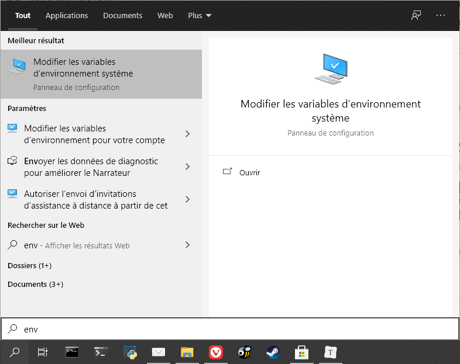
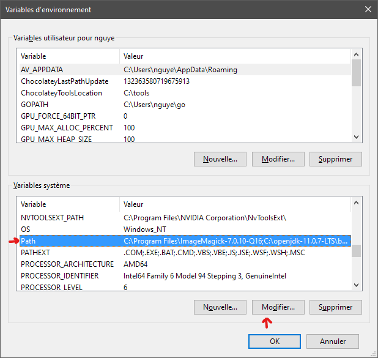
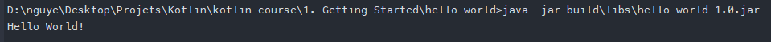

1. Get Started
1.1 Kotlin
Kotlin est un langage de programmation multiplateforme, à typé statique et à inférence de type. Kotlin est conçu pour interagir pleinement avec Java, et la version JVM de sa bibliothèque standard dépend de la bibliothèque de classes Java, mais l'inférence de type permet d'être plus concis dans sa syntaxe. Kotlin cible principalement la JVM, mais compile également en JavaScript ou en code natif (via la LLVM). Les coûts de développement du langage sont pris en charge par JetBrains, tandis que la Fondation Kotlin protège la marque Kotlin.
// Main.ktfun main() { println("Hello World")}1.2 Java
Java est un langage de programmation polyvalent basé sur les classes, orienté objet et conçu pour avoir le moins de dépendances d'implémentation possible. Il est destiné à permettre aux développeurs d'applications d'écrire une fois, d'exécuter n'importe où, ce qui signifie que le code Java compilé peut s'exécuter sur toutes les plates-formes qui supportent Java sans qu'il soit nécessaire de le recompiler.
Les applications Java sont généralement compilées en bytecode qui peut s'exécuter sur n'importe quelle machine virtuelle Java (JVM), quelle que soit l'architecture informatique sous-jacente. La syntaxe de Java est similaire à celle du C et du C++, mais elle comporte moins de fonctionnalités de bas niveau que l'une ou l'autre de ces technologies. En 2019, Java était l'un des langages de programmation les plus populaires en usage selon GitHub, en particulier pour les applications web client-serveur, avec un nombre de développeurs rapporté de 9 millions.
1.3 Tâche : Installer Java JDK
Il est recommander d'installer la dernière version de OpenJDK.
N'installer pas le JRE (Java Runtime Environnement) si vous installez JDK car il est déjà installé.
JRE ou JDK?
Le JRE (Java Runtime Environment) est nécessaire pour exécuter les programmes Java et Kotlin. Le JDK (Java Development Kit), d'autre part, comprend le JRE, ainsi que les outils de développement dont vous avez besoin pour écrire et exécuter des programmes Java. Vous avez besoin du JDK pour écrire des programmes Kotlin.
Linux
Ouvrez un terminal :
xxxxxxxxxxsudo apt install default-jdkVérifiez l'installation :
xxxxxxxxxxjava -versionjavac -versionMac
Installez https://adoptopenjdk.net/index.html
Vérifiez l'installation dans un terminal :
xxxxxxxxxxjava -versionjavac -versionWindows
Installez https://adoptopenjdk.net/index.html
Et ajoutez le dossier JDK au PATH.
PATH est une variable d'environnement sur les systèmes d'exploitation de type Unix, DOS, OS/2 et Microsoft Windows, spécifiant un ensemble de répertoires où se trouvent les programmes exécutables. En général, chaque processus d'exécution ou session utilisateur a son propre paramètre PATH.
Cherchez
envdans la barre de recherche et sélectionnez Modifier les variables d'environnement système
Dans la fenêtre qui s'affiche, sélectionnez Variables d'environnement...
Modifiez la variable PATH

Faites un Nouveau chemin et ajouter le chemin du JDK (par exemple :
C:\Program Files\Java\jdk-14.0.1\bin). Vérifiez bien que le dossier existe.
Vérifiez l'installation dans un terminal :
xxxxxxxxxxjava -versionjavac -versionNote : Vous avez peut-être besoin de redémarrer le système.
1.4 Tâche : Installer IntelliJ IDEA
IntelliJ IDEA est LE IDE dédié à Java. Eclipse est largement dépassé en terme de fonctionnalité.
https://www.jetbrains.com/idea/download/index.html
1.5 Tâche : Faites un nouveau projet Hello World
Créez un nouveau projet Gradle > Kotlin/JVM. Nous éviterons de prendre Kotlin > Kotlin/IDEA afin de se familiariser avec le système de compilation Gradle, largement utilisé pour les projets de type Java. Ne cochez pas Kotlin DSL (Gradle sous syntaxe Kotlin) étant donné que nous l'utiliserons pas.

Nommez et placez votre projet.
1.6 Structure des dossiers et fichiers
Initialement, un projet Gradle/JVM ressemble à ça :
.gradle: Contient Gradle et le cache de Gradle.idea: Configuration de IntelliJ Ideagradle/wrapper: Configuration du Gradle Wrappersrc/main/kotlinousrc/main/java: Code source de Kotlin ou Javasrc/test/kotlinousrc/test/java: Tests unitaires sous Kotlin ou Javasrc/*/resources: Fichiers divers envoyé dans le paquet compilé et exporté.build.gradle: Configuration de Gradle et des tâches de compilations.gradle.properties: Arguments de compilationgradlewougradlew.bat: Gradle Wrapper, script exécutant Gradle spécifié dans legradle/wrapper/gradle-wrapper.prepertiessettings.gradle: Configuration de Gradle en général
Précision en plus, chaque dossier contenu dans src/main/kotlin sont des packages et sont généralement nommés typeoforg.nameoforg.programname.packagename.subpackagename.
1.7 Tâche : Mettez à jour Gradle
Pour évitez les obsolescences, mettez à jour Gradle dans gradle/wrapper/gradle-wrapper.properties.
Changer
distributionUrlet mettez la dernière en cherchant l'url sur https://gradle.org/releases/.Pour ce cours, nous utiliserons :
distributionUrl=https\://services.gradle.org/distributions/gradle-6.5.1-bin.zipSynchronisez Gradle

1.8 Tâche : Faites votre package et votre main.
- Faites un New > Package dans
src/main/kotlin

- Puis faites un New > Kotlin File/Class et appelez-le
Main. Comparé à Java, Kotlin n'a pas besoin de classe pour s'exécuter. Le fichier en elle-même est une classe. - Faites une fonction main affichant "Hello World"
x// Main.ktpackage org.example.helloworldfun main() { println("Hello World!")}- Avec IntelliJ IDEA ou sur le Terminal, exécutez
gradlew build:

Le fichier compilé et exporté est dans le dossier build/libs.
Si on exécute le fichier :
xxxxxxxxxxjava -jar build\libs\hello-world-1.0.jarOn obtient :
xxxxxxxxxxaucun attribut manifest principal dans build\libs\hello-world-1.0.jarCette erreur est parce que nous n'avons pas déclaré où ce trouve la classe principale, MainKt. (Notez le Kt est en raison de Kotlin pour éviter un conflit avec Java lors de la compilation).
Dans le
build.gradle, modifier (override) la tâchejaren ajoutant :xxxxxxxxxxjar {manifest {attributes('Main-Class': 'org.example.helloworld.MainKt')}}Si vous utilisez Gradle DSL (
build.gradle.kts) :xxxxxxxxxxtasks.withType<Jar> {manifest {attributes["Main-Class"] = application.mainClassName}}Compilez :
xxxxxxxxxx./gradlew buildExécutez :
xxxxxxxxxxjava -jar build\libs\hello-world-1.0.jar
Bravo !
Analysons rapidement la syntaxe Kotlin :
xxxxxxxxxxfun main() { println("Hello World!")}fun déclare une fonction. Les arguments sont dans les parenthèses.
Augmentons légèrement la difficulté.
1.9 Tâche : Faites un classe Greeter
Faites un nouveau ficher Class Greeter.
Son constructeur prend un nom String en paramètre.
Une fonction
greetaffiche le nomxxxxxxxxxx// Greeter.ktpackage org.example.helloworldclass Greeter(private val nom: String) {fun greet() {println("Hello $nom!")}}Si on analyse la syntaxe :
classdéclare une class publique(private val nom: String)sont les paramètres du constructeurs et peuvent directement contenir les propriétés de la classe.Cette syntaxe est équivalente à :
xxxxxxxxxxclass Greeter constructor(private val nom: String) {fun greet() {println("Hello $nom!")}}Ou :
xxxxxxxxxxclass Greeter {private val nom: Stringconstructor(nom: String) {this.nom = nom}fun greet() {println("Hello $nom!")}}Voire :
xxxxxxxxxxclass Greeter(nom: String) {private val nom: Stringinit{this.nom = nom}fun greet() {println("Hello $nom!")}}Dans le main, exécuter la fonction en passant args en paramètre.
xxxxxxxxxxpackage org.example.helloworldfun main(args: Array<String>) {val name = try {args.first()} catch (e: NoSuchElementException) {"unknown man"}val greeter = Greeter(name)greeter.greet()}(Utilisez les autocomplétions pour deviner la syntaxe. Pour IntelliJ IDEA, le snipper est
maina)Ici, vous remarquez immédiatement le style particulier du Error Handling.
En effet, sous Kotlin, il est possible de faire des assignements à partir de déclaration. Ici, nous évitons le fait que "args" soit vide.
Compilez et exécutez.
xxxxxxxxxxjava -jar build\libs\hello-world-1.0.jarxxxxxxxxxxException in thread "main" java.lang.NoClassDefFoundError: kotlin/jvm/internal/Intrinsicsat org.example.helloworld.MainKt.main(Main.kt)Caused by: java.lang.ClassNotFoundException: kotlin.jvm.internal.Intrinsicsat java.base/jdk.internal.loader.BuiltinClassLoader.loadClass(BuiltinClassLoader.java:581)at java.base/jdk.internal.loader.ClassLoaders$AppClassLoader.loadClass(ClassLoaders.java:178)at java.base/java.lang.ClassLoader.loadClass(ClassLoader.java:522)... 1 moreEn effet, notre programme utilise actuellement la librairie standard de Kotlin (
org.jetbrains.kotlin:kotlin-stdlib). Cependant, le jar généré ne contiennent pas les classes dekotlin-stdlib. Typiquement les applications Java sont empaqueté avec plusieurs Jar pour une unique archive. Cependant, pour créer une application Jar exécutable, nous devons créer un "fat Jar" ou "uber Jar".Pour cela, modifiez (override) encore une fois la tâche
jardegradle.build:xxxxxxxxxx// gradle.build// ...jar {manifest {attributes('Main-Class': 'org.example.helloworld.MainKt')}// Récupérez les dépendances et empaqueter leurs contenus dans le jardependsOn configurations.runtimeClasspathfrom {configurations.runtimeClasspath.findAll { it.name.endsWith('jar') }.collect { zipTree(it) }}}xxxxxxxxxx// gradle.build.ktstasks.withType<Jar> {manifest {attributes["Main-Class"] = application.mainClassName}dependsOn(configurations.runtimeClasspath)from({configurations.runtimeClasspath.get().filter { it.name.endsWith("jar") }.map { zipTree(it) }})}- Compilez et exécutez.
xxxxxxxxxx./gradlew buildjava -jar build\libs\hello-world-1.0.jar MarcBravo ! Vous avez terminé votre premier programme pour JVM (Java Virtual Machine).
Kotlin est multiplateforme. Vous pouvez donc vous aventurer vers d'autre plateforme comme le Native (Windows, Linux, MacOS) ou Android/iOS ou Javascript !
1.10 La compilation de Kotlin
1.10.1 La compilation du code Kotlin/Java vers byte-code JVM

Image Credits : Medium/@banmarkovic
Le processus n'est pas très compliqué pour JVM.
Kotlin compile d'abord les fichier .kt en bytecode avec
kotlinc(de même pour Java avecjavac). Les fichiers générés sont des classes (.class) contenant les objets et leur méthode.Les class sont empaquetés dans un jar avec un Manifest décrivant le paquet (dont la Main-Class).
En utilisant un décompilateur, vous pouvez voir les classes en bytecodes dans le dossier
buid/classes/kotlin/main/org/example/helloworld.xxxxxxxxxx// Greeter.classpackage org.example.helloworld;import kotlin.Metadata;import org.jetbrains.annotations.NotNull;(mv = {1, 1, 16}, bv = {1, 0, 3}, k = 1, d1 = {"\000\030\n\002\030\002\n\002\020\000\n\000\n\002\020\016\n\002\b\002\n\002\020\002\n\000\030\0002\0020\001B\r\022\006\020\002\032\0020\003\006\002\020\004J\006\020\005\032\0020\006R\016\020\002\032\0020\003X\004\006\002\n\000\006\007"}, d2 = {"Lorg/example/helloworld/Greeter;", "", "nom", "", "(Ljava/lang/String;)V", "greet", "", "hello-world"})public final class Greeter {private final String nom;public Greeter( String nom) {this.nom = nom;}public final void greet() {String str = "Hello " + this.nom + '!';boolean bool = false;System.out.println(str);}}xxxxxxxxxx// MainKtpackage org.example.helloworld;import java.util.NoSuchElementException;import kotlin.Metadata;import kotlin.collections.ArraysKt;import kotlin.jvm.internal.Intrinsics;import org.jetbrains.annotations.NotNull;(mv = {1, 1, 16}, bv = {1, 0, 3}, k = 2, d1 = {"\000\024\n\000\n\002\020\002\n\000\n\002\020\021\n\002\020\016\n\002\b\002\032\031\020\000\032\0020\0012\f\020\002\032\b\022\004\022\0020\0040\003\006\002\020\005\006\006"}, d2 = {"main", "", "args", "", "", "([Ljava/lang/String;)V", "hello-world"})public final class MainKt {public static final void main( String[] args) {String str1;Intrinsics.checkParameterIsNotNull(args, "args");try {str1 = (String)ArraysKt.first((Object[])args);} catch (NoSuchElementException e) {str1 = "unknown man";}String name = str1;Greeter greeter = new Greeter(name);greeter.greet();}}Le Manifest se trouve dans
build/tmp/jar/MANIFEST.MFxxxxxxxxxxManifest-Version: 1.0Main-Class: org.example.helloworld.MainKtLe Jar est ensuite exécuté par le JRE (Java Runtime Environnement) sous JVM (Java Virtual Machine).
Le byte-code est ensuite convertit en machine code en utilisant un compilateur JIT (Just-In-Time).
Le machine code est envoyé dans la mémoire qui est exécuté par le CPU.
1.10.2 La compilation du code Kotlin/Java vers byte-code Android
Android ne fonctionne pas sous JVM mais sous ART (Android Runtime). Il s'agit du choix de Google afin de supporter un grand nombre d'appareils.
La compilation de Android ajoute donc une étape supplémentaire : D8 pour compiler et R8 minimiser, obfusquer, optimiser.

Image Credits : proandroiddev.com
Les fichiers .dex sont ensuite empaqueté dans un .apk (Android Package).
De plus, lors l'installation d'une application APK, le dex est compilé en fichier binaire OAT (Of Ahead Time) en utilisant un compilateur AOT (Ahead Of Time) pour éviter l'interpréteur et le compilateur JIT. (Le compilateur JIT compile lors de l'exécution, ralentissant le CPU).


Les étapes de compilations résumés sont donc ci-dessous :
- kotlinc/javac : Java/Kotlin vers .class
- d8 : .class vers .dex
- AAPT (Android Asset Packaging Tool) + APK Builder : assets + .dex vers .apk
Les étapes d'installations résumés sont :
- Unpack APK
- dex2aot : .dex vers fichiers binaire .oat
- Lancer les fichiers OAT avec ART